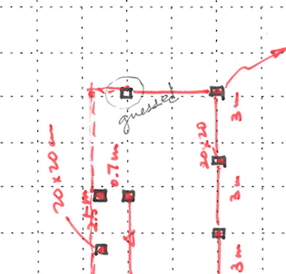

|

|
Accelerated Naive Bayesian probability fusion algorithm
This project provides an accelerated Naive Bayesian probability fusion algorithm that enables fast computation even when dealing with very large probability lists, where the exact method becomes prohibitively slow. Built on Bayesian theory of combining independent probabilities, it also includes the exact version for comparison, and is part of the work as “Information fusion to automatically classify post-event building damage state”.
github
/
paper
Liu, X., Iturburu, L., Dyke, S. J., Lenjani, A., Ramirez, J., & Zhang, X. (2022). Information fusion to automatically classify post-event building damage state. Engineering Structures, 253, 113765.
|